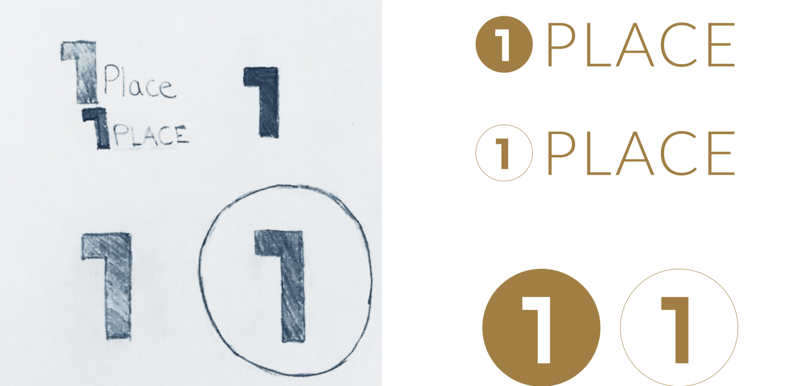

OnePlace
User Experience design & Branding
Cloud storage platforms are in high demand as people need more storage to keep their personal and professional lives organized. The goal of OnePlace was to create a space where people could store their files, organize/create content, and even communicate via the application.
Design Role
- UX Research
- Visual Design
- Branding & Identity
Deliverables
- User Surveys
- Personas
- User Stories
- User Flows
- SWOT Analysis
- Paper Prototype
- Wireframes
- User Testing
- Visual Design
Tools
- Figma
- InVision
- Usability Hub
PROCESS
- Phase 1. Research and Testing (Round 1)
- Phase 2. Branding
- Phase 3. Testing (Round 2)
- Phase 4. Final Product Features
- Phase 5. Conclusion
PROBLEMS
- 1. Sharing content can be confusing and take too long.
- 2. Organizing content can be difficult with numerous files.
- 3. Many cloud storage applications don’t have content creation as an option but users want the options to create projects for professional and personal use and save them to their cloud storage applications.)
- 4. Uploading Images/videos can either take too long or the process isn’t intuitive.
SOLUTIONS
- 1. Sharing Content: Make it as intuitive as possible by right clicking on files to share.
- 2. Organizing content: Use categories to easily organize files, folders, and links.
- 3. Create Content/Collaborate: Provide a seamless way to create content and save in application.
- 4. Uploading large and small files: Make the uploading proess quick and easy by using a drag and drop feature and creating the platform so that it can withstand uploading large files.
PHASE 1: OVERVIEW
- 1. Assumptions
- 2. User Research
- 3. User Personas
- 4. Competitive Analysis
- 5. User Stories and User Flows
- 6. Content Strategy & Wireframes
- 7. Wireframe Usability Testing
ASSUMPTIONS
AUDIENCE
- 1. People who store everything.
- 2. People who store for specific purposes (pictures, work projects, family documents, etc.)
- 3. People who desire to keep everything stored but need a better system to help with organization.
Most people fall into the third category and just need a little help with getting everything in one place easily and efficiently. There are cloud storage apps that specialize in performing different tasks for their users. My goal was to create the most intuitive version of each of those tasks and combine them so users could truly use OnePlace for all of their productivity needs.
USER RESEARCH
100%
Users had experience with cloud storage.
95%
Were most familiar with Google Drive.
87%
Used cloud storage for work.
70%
Used cloud storage for their studies.
52%
Users were frustrated with organizing content.
43%
Users were frustrated with lack of storage.
71%
of user’s top need for cloud storage was uploading files.
65%
of user’s second need for cloud storage was sharing content.
52%
of user’s third need for cloud storage was creating content.
USER PERSONAS

I created two target audiences in my personas represented by a person in the workforce who used cloud storage and a student who also used cloud storage because 45% of the people who took the survey were full-time employees and 36% of survey takers were students.
MICHAEL JOHNSON
30 year old project manager living in Malibu, Ca.
GOALS
Use a platform that allows me to be the most effective and efficient project manager so my team thrives. Keep everything (files, bookmarks, created docs, videos, etc.) in one place for work and personal items to stay organized. “To acheive the most out of my life and career, I must work smarter, not harder.”
FRUSTRATIONS
There are too many tools with difficult user experiences that forces me to spend time learning them rather than being productive. There are not enough drag and drop features as well as super easy ways to organize content.
ALEXIS SMITH
23 year old UX/UI Student living in Atlanta, GA
GOALS
Use one platform where she can stay on track with assignments, collaborate with other students and keep all her work in one place.
Be an excellent student whom uses her education to find a career in UX/UI Design.
“As a design student, it’s my goal to design intentionally while focusing on the users.”
FRUSTRATIONS
Lack of space on devices and software
Cost is too expensive
Needs a bookmark feature for online links and recources.
COMPETITIVE ANALYSIS
The goal with OnePlace was to make a cloud storage site that differentiated itself from its competitors. I performed an in-depth competitive analysis of the most popular cloud storage sites which included, Dropbox, Google, and OneDrive.
Strengths: file sharing, file syncing, intuitive design.
Weaknesses: low security regarding Google Drive and high pricing for access to OneDrive and Dropbox’s platforms.
USER STORIES & USER FLOWS
The survey’s results lead to creating user stories which highlighted seven main features of the product. These features were converted to user flow tasks, which would later be tested by users.
- Tasks Included:
- 1. Signing Up
- 2. Logging In
- 3. Uploading Images
- 4. Saving Files
- 5. Creating Content
- 6. Sharing Files
- 7. Organizing Content
USER STORIES & USER FLOWS
Wireframe User Testing Feedback:
The feedback I received from the usability testing using wireframes was extremely beneficial.
Problems that needed correcting included:
- I needed to put words next to my icons to provide more clarity on the purpose of the icons.
- Have a better location for the "home" button.
- I had quite a few typos that needed to be corrected so I went in and combed through the verbiage and changed the spelling.

PHASE 2 OVERVIEW: BRANDING
- 1. Branding Strategy
- 2. Logo Design
- 3. Color Palette
- 4. Moodboard
- 5. Typography
BRANDING STRATEGY
After performing user research, I found the best way to differentiate a new cloud storage platform from the rest was to create an application where someone could perform all of their productivity needs in one spot. These productivity features included: store files, create documents, communicate, collaborate, and manage projects.
Audience: Focusing on teachers, families, students, those in the workplace.
This lead to the name, OnePlace with the slogan, “Simplify your life by going to OnePlace for everything.”
The branding design was inspired by three words: minimalist, sohpisticated, and organized.
LOGO DESIGN
COLOR PALETTE

MOODBOARD

TYPOGRAPHY

TESTING (ROUND 2) OVERVIEW
- 1. Preference Testing
- 2. Usability Testing with High Fidelity Mockups
PREFERENCE TESTING
I performed three preference tests on the design. Two were focused on using stock images or actual images of the product on the website. One was focused on using Google’s branding colors on the Sign Up portion of the site.
After gathering the data, it was clear the users:
- 1. wanted to see images of the actual product on the site rather than stock images.
- 2. opted for the color scheme to stay the same (gold) on the Sign Up page instead of changing Google’s name to light blue.
- 3. recommended I add Google’s logo so it went with branding better.
USABILITY TESTING WITH HIGH FIDELITY MOCKUPS
High Fidelity Mockup User Testing Feedback:
I completed three usability tests and the notes were very insightful.
The five tasks were: (1) Sign Up, (2) Login, (3) Create New Document, (4) Upload Image, (5) Share a File.
User Feedback:
The first user was able to click through each task with ease and mentioned that that it was clear.
The second user got stumped on a few things and gave feedback on five separate areas of the design. The main issues she kept running into were unrecognizable icons. She wanted more clarity on what each icon meant.
The third user specifically got stumped on a the “Create New Document” task because the button wasn’t clear. The second one the user got stumped on was the “Sharing a File” task because the share icon didn’t appear to exist to them. I will need to expand it and make it more clear.
I made the changes in mockups to reflect the feedback given.
 -->
-->